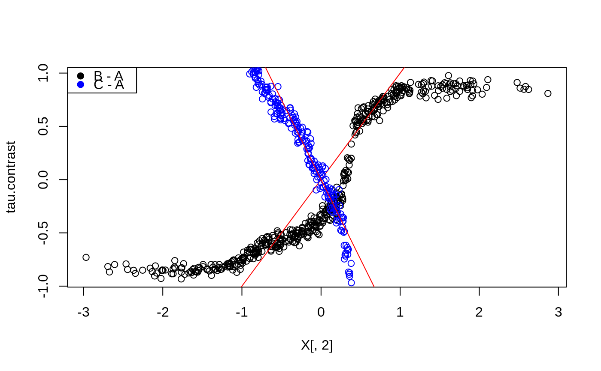

R/multi_arm_causal_forest.R
predict.multi_arm_causal_forest.RdGets estimates of contrasts tau_k(x) using a trained multi arm causal forest (k = 1,...,K-1 where K is the number of treatments).
# S3 method for multi_arm_causal_forest predict( object, newdata = NULL, num.threads = NULL, estimate.variance = FALSE, ... )
| object | The trained forest. |
|---|---|
| newdata | Points at which predictions should be made. If NULL, makes out-of-bag predictions on the training set instead (i.e., provides predictions at Xi using only trees that did not use the i-th training example). Note that this matrix should have the number of columns as the training matrix, and that the columns must appear in the same order. |
| num.threads | Number of threads used in training. If set to NULL, the software automatically selects an appropriate amount. |
| estimate.variance | Whether variance estimates for hattau(x) are desired (for confidence intervals). This option is currently only supported for univariate outcomes Y. |
| ... | Additional arguments (currently ignored). |
A list with elements `predictions`: a 3d array of dimension [num.samples, K-1, M] with predictions for each contrast, for each outcome 1,..,M (singleton dimensions in this array can be dropped by passing the `drop` argument to `[`, or with the shorthand `$predictions[,,]`), and optionally `variance.estimates`: a matrix with K-1 columns with variance estimates for each contrast.
# \donttest{ # Train a multi arm causal forest. n <- 500 p <- 10 X <- matrix(rnorm(n * p), n, p) W <- as.factor(sample(c("A", "B", "C"), n, replace = TRUE)) Y <- X[, 1] + X[, 2] * (W == "B") - 1.5 * X[, 2] * (W == "C") + rnorm(n) mc.forest <- multi_arm_causal_forest(X, Y, W) # Predict contrasts (out-of-bag) using the forest. # By default, the first ordinal treatment is used as baseline ("A" in this example), # giving two contrasts tau_B = Y(B) - Y(A), tau_C = Y(C) - Y(A) mc.pred <- predict(mc.forest) # Fitting several outcomes jointly is supported, and the returned prediction array has # dimension [num.samples, num.contrasts, num.outcomes]. Since num.outcomes is one in # this example, we can `drop()` this singleton dimension using the `[,,]` shorthand. tau.hat <- mc.pred$predictions[,,] plot(X[, 2], tau.hat[, "B - A"], ylab = "tau.contrast")# The average treatment effect of the arms with "A" as baseline. average_treatment_effect(mc.forest)#> estimate std.err contrast outcome #> B - A -0.1096384 0.1236261 B - A Y.1 #> C - A -0.1848733 0.1482385 C - A Y.1# The conditional response surfaces mu_k(X) for a single outcome can be reconstructed from # the contrasts tau_k(x), the treatment propensities e_k(x), and the conditional mean m(x). # Given treatment "A" as baseline we have: # m(x) := E[Y | X] = E[Y(A) | X] + E[W_B (Y(B) - Y(A))] + E[W_C (Y(C) - Y(A))] # which given unconfoundedness is equal to: # m(x) = mu(A, x) + e_B(x) tau_B(X) + e_C(x) tau_C(x) # Rearranging and plugging in the above expressions, we obtain the following estimates # * mu(A, x) = m(x) - e_B(x) tau_B(x) - e_C(x) tau_C(x) # * mu(B, x) = m(x) + (1 - e_B(x)) tau_B(x) - e_C(x) tau_C(x) # * mu(C, x) = m(x) - e_B(x) tau_B(x) + (1 - e_C(x)) tau_C(x) Y.hat <- mc.forest$Y.hat W.hat <- mc.forest$W.hat muA <- Y.hat - W.hat[, "B"] * tau.hat[, "B - A"] - W.hat[, "C"] * tau.hat[, "C - A"] muB <- Y.hat + (1 - W.hat[, "B"]) * tau.hat[, "B - A"] - W.hat[, "C"] * tau.hat[, "C - A"] muC <- Y.hat - W.hat[, "B"] * tau.hat[, "B - A"] + (1 - W.hat[, "C"]) * tau.hat[, "C - A"] # These can also be obtained with some array manipulations. # (the first column is always the baseline arm) Y.hat.baseline <- Y.hat - rowSums(W.hat[, -1, drop = FALSE] * tau.hat) mu.hat.matrix <- cbind(Y.hat.baseline, c(Y.hat.baseline) + tau.hat) colnames(mu.hat.matrix) <- levels(W) head(mu.hat.matrix)#> A B C #> [1,] 0.63243397 -0.04840816 1.65022877 #> [2,] -0.66278558 -1.42841517 0.57383368 #> [3,] -0.04376783 -0.55020403 -0.01878143 #> [4,] 0.65940208 1.52358803 -1.09434643 #> [5,] -0.07242242 0.90418661 -2.04228110 #> [6,] 0.23143319 0.24527392 -0.48662315# The reference level for contrast prediction can be changed with `relevel`. # Fit and predict with treatment B as baseline: W <- relevel(W, ref = "B") mc.forest.B <- multi_arm_causal_forest(X, Y, W) # }